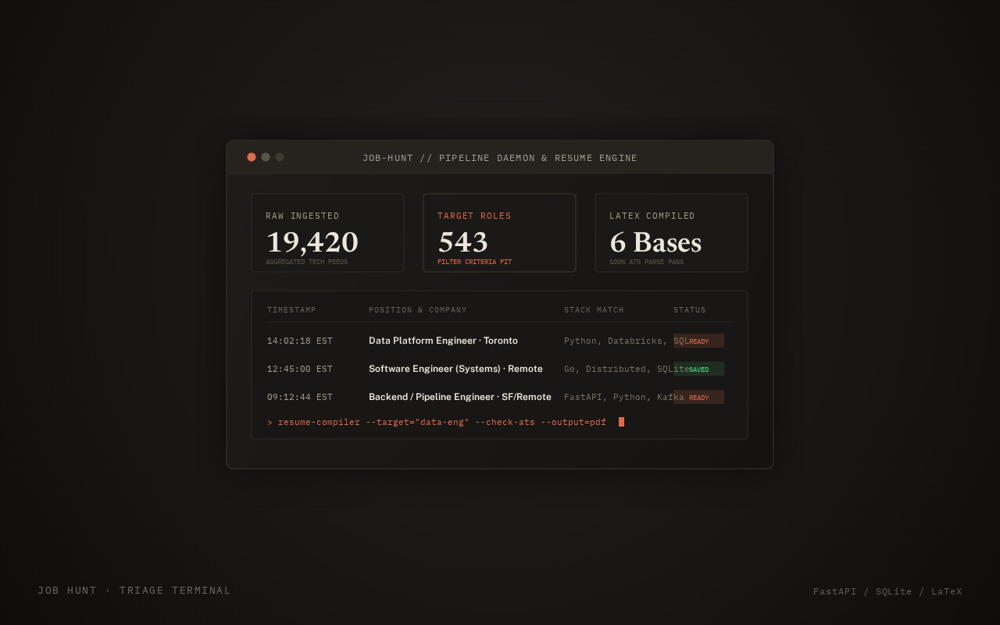

Job Hunt
A job search pipeline and resume engine I built for my own search.

Why
The new-grad job feeds I used had about 19,000 postings and no good way to see what was new, what closed, or what actually fit me.
What I built
- A pipeline in Python, FastAPI and SQLite that pulls in the 19,000-posting feed, filters it down to the 543 roles that fit, and tracks when each one opens and closes.
- A React dashboard for going through them, saving them and tracking applications.
- A resume engine that compiles a bank of bullet points written in TOML into LaTeX, producing 6 base resumes plus versions for specific jobs. A fact-check refuses any number that isn't in a wording I've approved, and every PDF is checked to make sure applicant tracking systems can read it.
Where it's at
It runs every day and it's how I'm doing my search right now.